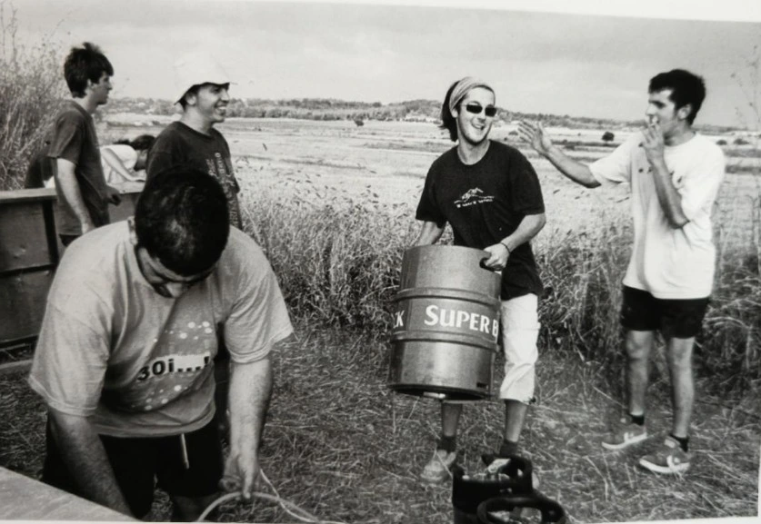
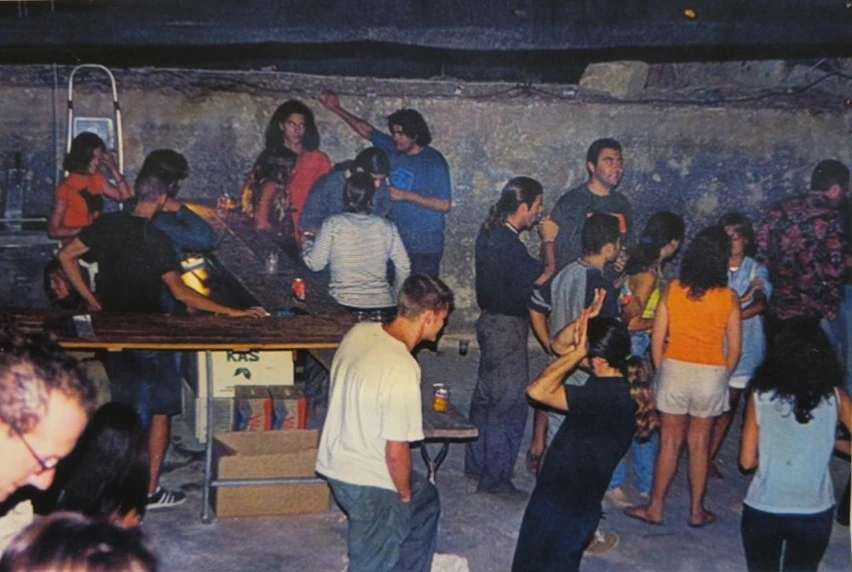
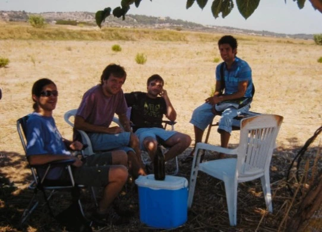
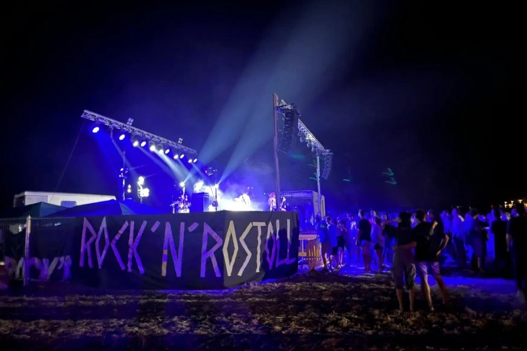
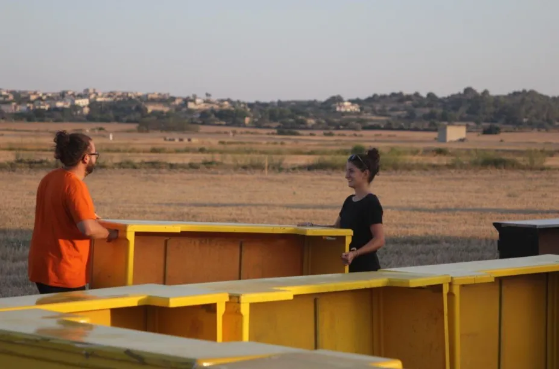

Sobre el festival
Rock'n'Rostoll: Història d’un Festival Rural i el Seu Present
Rock’n’Rostoll és molt més que un festival de música: és una expressió de rebel·lia juvenil i cohesió comunitària nascuda al cor rural de Mallorca. Des de 1995, cada darrer dissabte d’agost, un camp de rostoll es transforma en un escenari vibrant on rock i electrònica s’uneixen sota la lluna d’estiu. Autogestionat pels joves del poble i amb entrada gratuïta, el festival és un símbol de llibertat, tradició i passió col·lectiva.
Orígens: De la Nit de Rock a un Somni Col·lectiu (1994-1995)
El germen de Rock'n'Rostoll neix l’estiu de 1994, quan un grup de joves de Maria de la Salut —entre ells membres de bandes locals com Sklata Sang— decidí plantar cara a l’avorriment organitzant la seva pròpia Nit de Rock. Aquella trobada improvisada al mig d’un camp segat fou un acte de creativitat i rebel·lia que establí les bases d’una nova tradició.
L’any següent, 1995, se celebrà la 1a edició oficial de Rock'n'Rostoll, consolidant l’esperit valent i autogestionat d’aquells pioners. El nom, una fusió perfecta de rock i ambient rural, reflecteix una nit on la llibertat, el renou i la diversió sota les estrelles esdevenen protagonistes i arrelen en la identitat del poble.


Creixement i Revolució amb el Safareig Dance (1996-2000)
Durant la segona meitat dels noranta, el festival va créixer en ambició i logística. Cada edició sumava més bandes underground i un públic que no parava d’augmentar. L’any 1999 marcà un punt d’inflexió amb la creació del Safareig Dance, un antic dipòsit d’aigua reconvertit en pista d’electrònica que complementava l’escenari principal de rock.
La combinació de rock damunt el rostoll i sessions de techno i house dins el safareig va revolucionar el festival, atreient jovent de tota l’illa i fixant el model de dos escenaris que perdura fins avui. Rock'n'Rostoll es convertia així en una cita imprescindible per a la cultura alternativa mallorquina.
Consolidació i Experiències Úniques (2001-2010)
L’entrada al nou mil·lenni va consolidar Rock'n'Rostoll com un referent cultural i musical. El festival va establir una estructura més professional, sense perdre l’essència autogestionada i comunitària. Els voluntaris del poble foren peça clau per mantenir l’ordre, la seguretat i l’ambient festiu, fent que cada edició fos una experiència única.
Cada any, noves bandes locals i estatals aportaven varietat i qualitat musical, mentre que els DJ omplien el Safareig Dance fins a la matinada. L’ambient rural, la proximitat del públic amb els artistes i la llibertat per ballar damunt el rostoll esdevingueren segell del festival.


Actualitat: 30 Anys de Germanor i Cultura (2011-Avui)
Avui dia, Rock'n'Rostoll continua sent una cita imprescindible l’últim dissabte d’agost. Amb l’entrada lliure com a pilar fonamental, el festival aposta per una programació diversa que combina rock, punk, metal i electrònica amb propostes visuals i culturals que amplien l’experiència.
El compromís amb la comunitat s’ha reforçat amb campanyes de sensibilització, col·laboracions amb entitats locals, punts lila i un enfocament sostenible. Les noves generacions han agafat el relleu organitzatiu mantenint viu l’esperit rebel i comunitari que el va fer néixer.
Voluntariat i Futur
Rock'n'Rostoll és possible gràcies a les persones voluntàries que any rere any dediquen temps, esforç i il·lusió a muntar escenaris, coordinar activitats, cuidar la logística i garantir que tot funcioni. A la vegada, el festival és una escola de gestió i treball col·lectiu pels joves del municipi.
De cara als pròxims anys, Rock'n'Rostoll seguirà evolucionant sense perdre les seves arrels: un festival rural, gratuït i autogestionat que aposta per la cultura lliure i l’energia comunitària. T’hi esperam al camp de rostoll!
